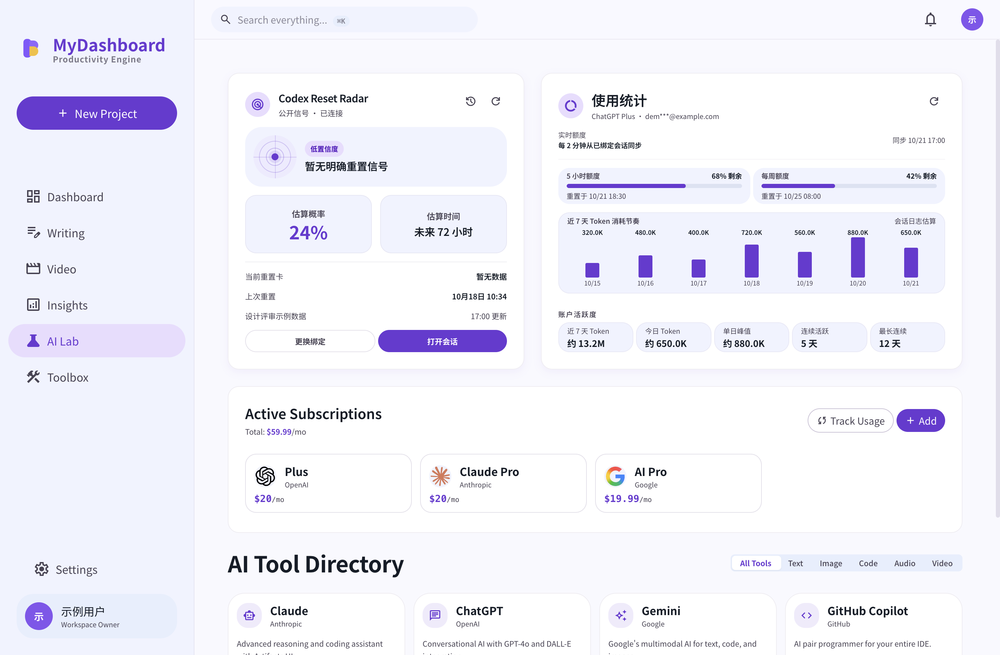
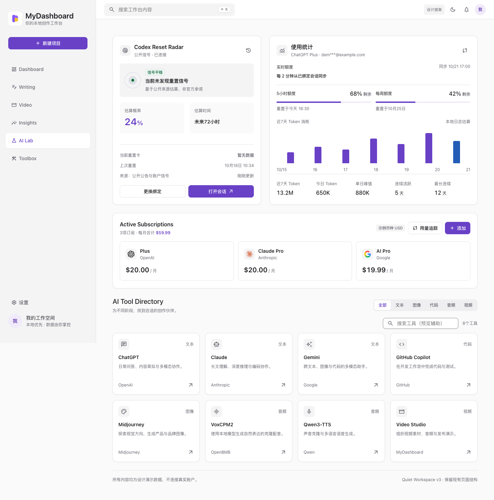

CURRENT / 现状截图由当前代码启动捕获

历史存档，已被 设计规范 2.0 取代。新版设计稿：运行 pnpm design:preview。
跳到主内容参考 DSH Desktop 的中性工作台语言，保留 MyDashboard 的紫色识别；用低噪表面、紧凑控件和稳定层级连接整个工作台。
ChatGPT Plus · 示例账户
中性表面与紧凑控件来自源码核对；紫色品牌、8px控件与现有布局为本项目决定。保留 Material 的语义状态与可访问行为。
角色决定用途，on-* 决定可读性。切换深色时保持语义一致。
主色调整为项目紫色的克制版本 #6941C6；页面与卡片采用中性灰白。深色采用近黑与中性灰分层。生成器检查 常用文字色配对，业务叠色仍需单独验收。
| 语义角色 | Light | Dark |
|---|
正文 14px / 400，操作标签 13px / 500。中文不堆叠粗体，也不使用额外字距。
控件、卡片和弹窗各有尺度；圆角不是所有组件共用一个数字。
同组 8–12px · 分区 24px · 页面 48px · 卡片内距 20px
状态层替代提亮、缩放和位移；焦点始终独立可见。
原始 SVG · 不变形 · 安全区 ¼ 尺寸
Material Symbols Outlined · 18px / 操作16px · wght 400 · selected FILL 1
58 类组件，统一的桌面尺度。操作预览、切换主题，展开查看完整规格。
保留雷达、用量、订阅与工具目录；统一标题、表面、操作和数据密度。


并排模式使用同为1440px窗口宽度的浅色标准密度截图，按等宽缩放；交互与主题切换请使用“设计提案”视图。
保留现有模块顺序与 5:7 栅格。分区16px、正文14px、辅助12px，以字重和留白替代大号标题。
卡片12px、普通控件8px、弹窗16px。大面积中性色，1px细边界；紫色只用于必要强调。
操作保留在原分区，就近反馈；订阅保留横向卡片，工具目录保留原有桌面网格。
严重等级针对当前问题影响；改动规模另列。没有任务阻断证据，本次不虚设 P0 布局问题。
| 范围 | 建议 / 提案处理 | 等级 | 布局改动 |
|---|---|---|---|
| 全局框架 | 280px 侧栏、顶部搜索、内容最大1280px与48px留白保持 | P2 · 保持 | 无 |
| Radar / Usage | 保留5:7顺序与功能区域，统一卡片内对齐、文字与边界 | P1 · 建议 | 局部微调 |
| 订阅 | 撤销上版表格提案，恢复横向卡片与原分区操作 | P1 · 已修订提案 | 恢复现有结构 |
| 工具目录 | 标题、分类在同一行；桌面4列，窄屏折列 | P2 · 建议 | 保持 |
| 窗口窄化 | 内容单列，订阅局部横滚，导航按空间折叠 | P1 · 条件修复 | 仅窄窗口 |
| 减小页面留白 | 48→40px或侧栏280→240px需另评审，本版不采用 | P2 · 可选 | 暂不变更 |
把规范变成可消费的数据，让文档和预览一起变化。
颜色 · 字体 · 圆角 · 尺寸
场景 · 变体 · 令牌引用 · 行为
组件目录与设计预览同步生成
npm run design:generate 同步三份生成物。npm run design:check 校验引用、主题、对比度与生成一致性。普通文字目标 ≥4.5:1；下表根据令牌计算，未覆盖照片背景与透明叠层。
| 主题 | 前景 / 背景 | 对比度 | 结果 |
|---|